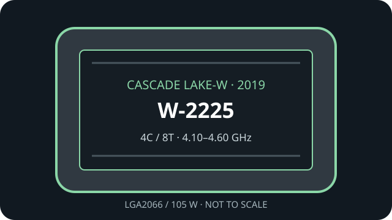

[ INDIVIDUAL WORKSTATION CPU ]
Intel Xeon W-2225
Cascade Lake-W (Xeon W-2200 series), 2019. Exact model: Intel Xeon W-2225. 4 cores/8 threads; 4.10 GHz base / 4.60 GHz maximum turbo; 8.25 MB cache; 105 W TDP; LGA2066.

MODEL ID: Intel Xeon W-2225. Cascade Lake-W shares LGA2066 with earlier W processors, but board support and BIOS must be checked for the exact generation.
Model specifications
| Architecture / generation | Cascade Lake-W, Xeon W-2200 workstation generation (2019) |
|---|---|
| Exact part | Intel Xeon W-2225 |
| Package / socket | FC-LGA2066 (LGA2066 / Socket R4) |
| Compute and clocks | 4 cores / 8 threads; 4.10 GHz base; up to 4.60 GHz Intel Turbo Boost 2.0 |
| Cache / power | 8.25 MB Intel Smart Cache; 105 W TDP |
| Memory | 4-channel DDR4-2933; ECC; up to 1 TB maximum (platform and DIMM configuration dependent) |
| Expansion | 48 PCI Express 3.0 lanes from CPU |
| Board compatibility | C422/LGA2066 workstation board explicitly validated for Xeon W-2200, such as Supermicro X11SPA-TF; confirm exact W-2225 CPU-list entry and BIOS with the board vendor. |
Compatibility and service
- Require a board with explicit W-2200 generation support; identical LGA2066 sockets do not assure firmware compatibility.
- Populate quad-channel DDR4-2933 ECC memory according to the motherboard QVL and DIMM type/capacity limits.
- Observe the 105 W CPU cooling and board power-delivery requirements.
- No integrated graphics; use a discrete GPU if display output is needed.
Sources & further reading
- Intel ARK — Xeon W-2225 model lookupIntel model-level specifications and feature information.
- Intel — Xeon W-2200 processors product briefManufacturer generation overview and platform capabilities.
- Supermicro — X11SPA-TF workstation motherboardBoard manufacturer documentation for Xeon W-2200-era platform; confirm exact CPU support and BIOS.
- Various Creators — Intel Xeon W Workstation CPU ReviewIndependent video review; treat as supplementary context, not primary manufacturer documentation.